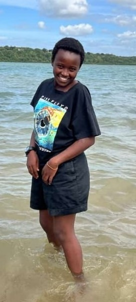

Just a special time to think of myself and how to reduce low self-esteem.

I really love my smile because it always keeps me happy.

Always love the sunrise because it tells me how the day will be beautiful with good people around me.

I am always happy no matter how hard life is. I will always have a smiling face.

Always in love with nature just the way it is and also love exploring the world.

Before everything in my life, I will always remember God's protection.

Loving myself is the most important thing in my life even though people around me do not show me love.

Always love swimming because it is my therapy and helps me heal from what I am going through.